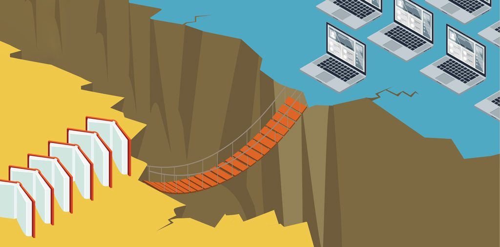

¿Qué es la brecha digital?
El término brecha digital alude a la desigualdad existente entre las personas respecto a las posibilidades en cuanto al acceso, calidad, uso y formación tanto en su rol como consumidores o productores en las tecnologías de la información y la comunicación denominadas “TIC”. Esta desigualdad se origina en diversos factores como la ubicación geográfica, situación económica, sociedad, cultura, edad y género, entre otros. La brecha digital, como una manifestación de la brecha social, actúa como un elemento de exclusión tanto a nivel social como personal.
